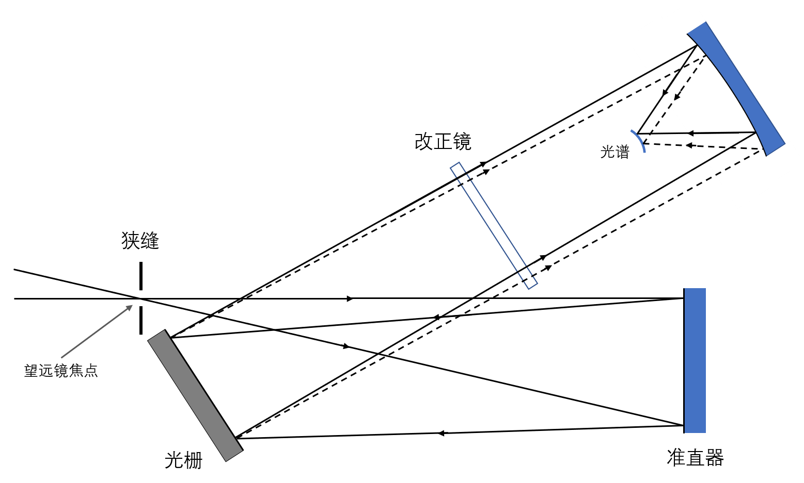
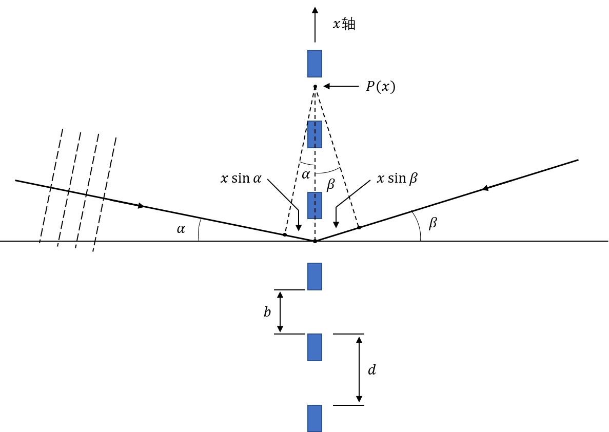
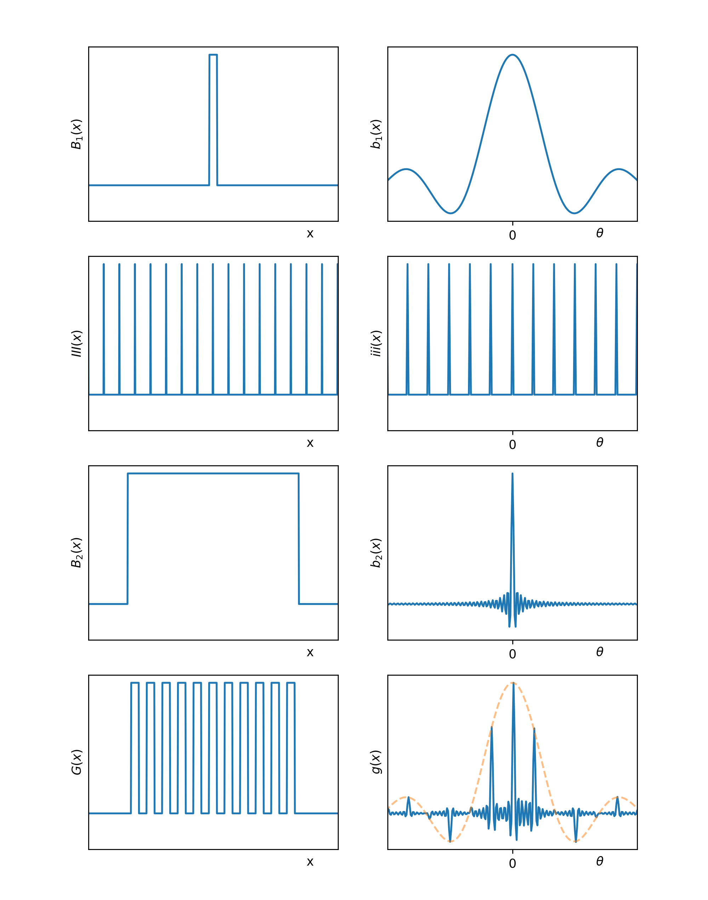
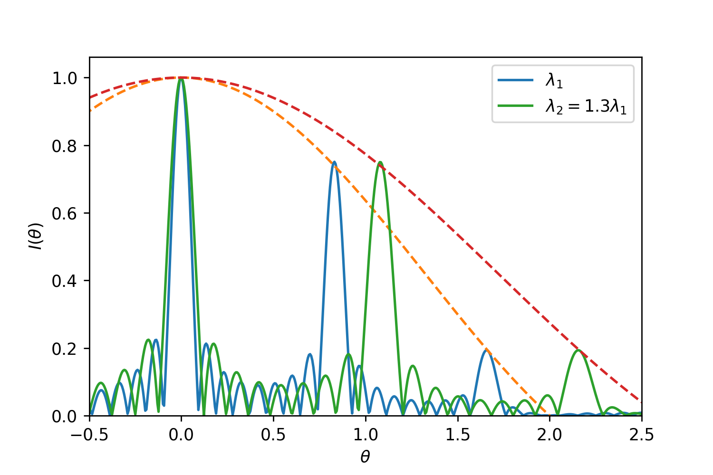
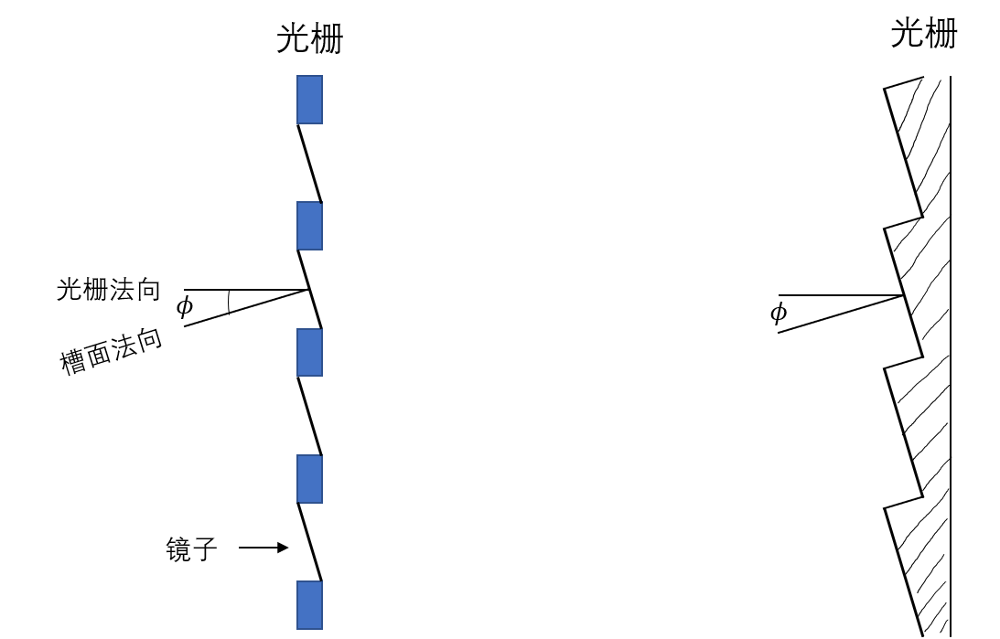
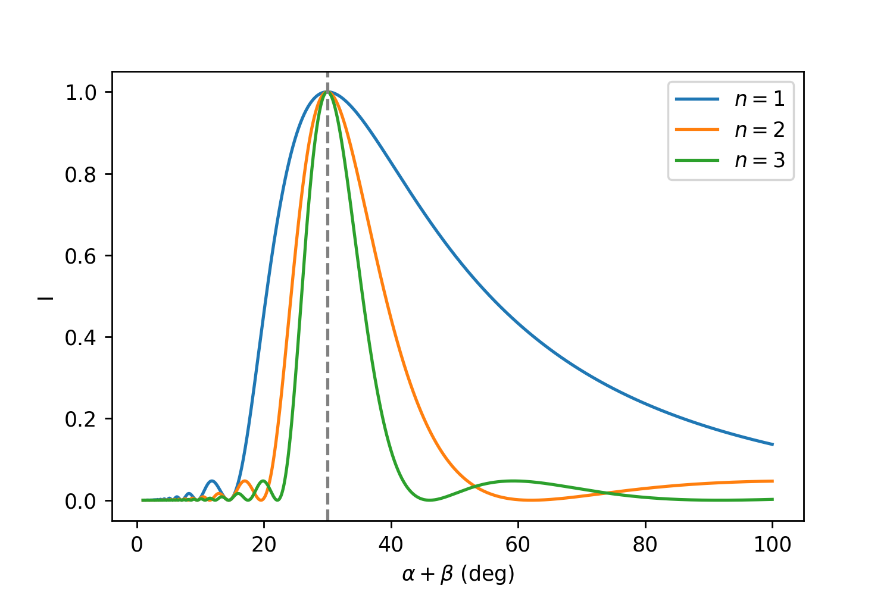
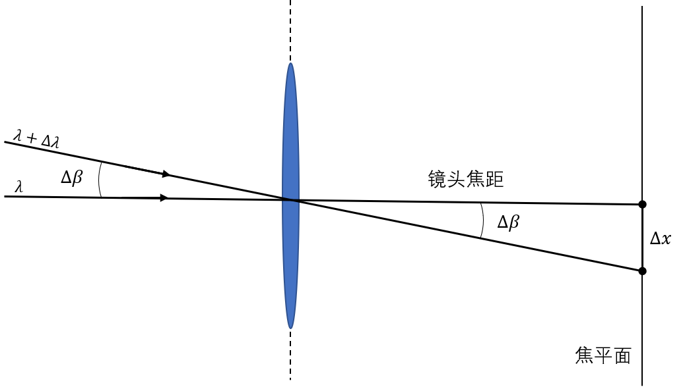
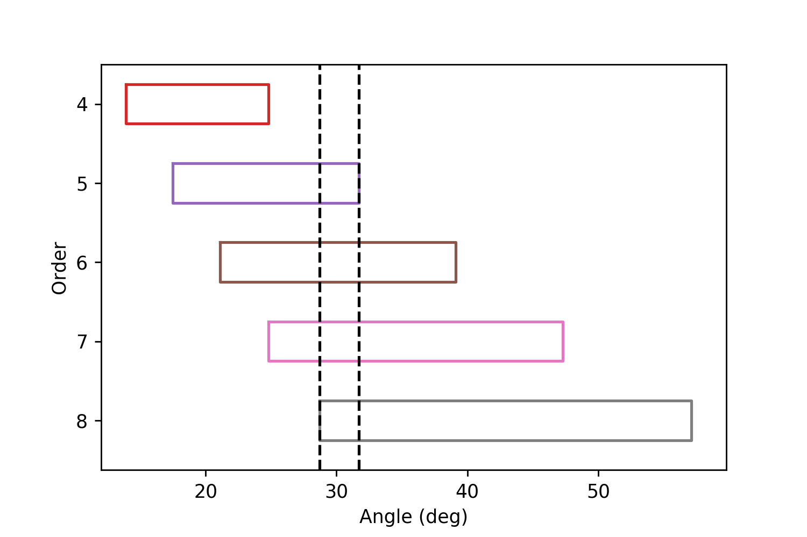
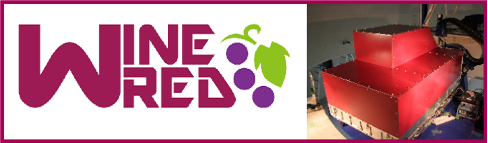

第三章：光谱仪¶
我们需要光谱仪，没有光谱仪哪来的光谱。低分辨率光谱仪可以得到天体的连续谱（第十章），而高分辨率的光谱仪可以得到天体的谱线（第十二章）。
概述¶
 光谱仪示意图
从望远镜中过来的光在狭缝的中心聚焦，然后被准直器变为平行光照到光栅上面，色散后经过改正镜再被聚焦到CCD上。单色光会在焦面上形成一条线；而因为一般狭缝的宽度都比较大，最终在焦面形成的线宽基本不受光栅衍射条纹的影响。而当复色光入射到光谱仪的时候，焦面上将形成一段连续谱。连续谱中每个颜色的“纯净”程度由\($ \Delta \lambda $\)决定。\($ \Delta \lambda $\)越小，色散程度越大，天文学家们越高兴。不过色散程度也需要和天体入射的光的总量协调，因为色散程度越大每个像素的光流量越小，需要的积分时间就越长。一般来说我们需要\($ \Delta \lambda $\)小于我们关心的光谱结构；第十二章有定量计算。
衍射光栅及其原理¶
 衍射光栅示意图
令\($ P(0) $\)所指示的点为相位0点，则在光栅上任一点和它的相位差为\($ x \sin{\alpha} $\)；\($ \alpha $\)为入射平面光法向与光栅法向的夹角，是一个定值。所以我们可以将在光栅上的入射光表达为：
同时因为入射光的频率很大，积分时间一般又比较长，所以可以将\($ F_0(t) $\)用它的平均值\($ F_0 $\)代替。
令\($ G(x) $\)为光栅，
在\($ \beta $\)角上看到的光强为\($ F(x, t) $\)与\($ G(x) $\)的乘积加上离开光栅后的相位差在\($ x $\)上的积分：
令\($ \theta = \frac{\theta'}{\lambda} = \frac{\sin{\alpha} + \sin{\beta}}{\lambda} $\)，有
将这个式子与第二章的傅里叶变换定义式比较，我们发现它们是一样的，所以光栅就相当于一个傅里叶变换器。因为这里\($ F_0 $\)是一个常数，重要的是后面的积分，所以之后我们将直接讨论\($ G(x) $\)的傅里叶变换。
\($ G(x) $\)的傅里叶变换¶
将Shah函数用\($ \delta $\)函数表达：
 光栅以及它的傅里叶变换
在小角度下\($ d\theta' $\)和\($ d\beta $\)近似是一样的：
每个尖峰下降到0时的宽度由\($ B_2(x) $\)决定：
每个尖峰的位置由\($ III(x) $\)决定：
所以不同波长的光有不同的宽度和尖峰位置。这里的\($ n $\)称为级数，0级光谱所有波长的光都集中在\($ x=0 $\)处，所以为白光。1级和其他级光谱的分辨率为：
将\($ \Delta \theta' = \frac{\lambda}{W} $\)代入\($ (3.6) $\)，得：
这个量可以理解为单位角度上的波长改变量是多少；我们当然希望它越小越好，所以\($ n $\)小的时候要增大板宽和多刻线；\($ n $\)大的时候则不一定。
 复色光入射时的情况
闪耀光栅¶
上图中我们可以看到透射光栅的光谱受到狭缝宽度影响，主要的能量落在了0级处，并没有分开。我们自然不希望这样，而是想让多数的光落在我们想要的级数上。要做到这一点，我们只需要将\($ b_2(\theta) $\)的最高点从0移动到对应的级数位置即可。第二章傅里叶变换的性质2表明如果想在某个域上平移函数，需要在另一个域上引入相位差，在这里也就是不同的光程。实际的操作可以在狭缝中插入三棱镜让光线偏转，但是棱镜会带来色散，而且这样的光栅也很难制作。所以常用的是将狭缝改成倾斜的面镜，从而将光反射到某个特定角度。这样的光栅叫闪耀光栅，光栅法线与槽面法线之间的夹角\($ \phi $\)叫闪耀角(在法线同侧的角度正负号相同)。
 闪耀光栅（右）示意图
这个时候式子\($ (3.4) $\)的最后一项发生了变化，\($ \alpha, \beta $\)变成了\($ \alpha-\phi, \beta-\phi $\)。这里用减号的原因是虽然对于槽面来说，图示的\($ \phi $\)角会使得入射角和反射角都增大，但是\($ (3.4) $\)中的\($ \alpha, \beta $\)指的是箭头所指的线段长度，这两段线在反射光栅的情况下都减小了。所以对于归一化的这一项，我们有：
因为光栅的分光，只有符合\($ (3.5) $\)的波长的光才能通过，所以我们可以将\($ (3.5) $\)代入\($ (3.8) $\)消去\($ \lambda $\)（注意\($ (3.5) $\)中的\($ \alpha, \beta $\)不变），得到：
示例图如下：
 闪耀光栅的光强包络线，\($ \phi=15^\circ $\)
可以看到这个时候整个函数的最大值被推到了\($ \alpha+\beta = 2\phi $\)的地方。当然我们也可以用\($ \lambda $\)作为自变量，画出\($ I(\beta) $\)随\($ \lambda $\)的变化情况。
利特罗条件¶
一般来说光栅在制造的时候会被造成当入射角和衍射角一样的时候，1级光谱会被闪耀，这被叫做利特罗条件。但是当入射光线和衍射光线在同一个方向的时候，我们并不能接收到光谱，所以一般使用的是别的入射角；这种情况下1级光谱的闪耀波长会发生变化。假设利特罗条件下的闪耀波长为\($ \lambda_0 $\)，则根据\($ (3.5) $\)有：
两式相除，得：
阴影¶
光栅的摆放方式有很多种。我们之前讨论的都是入射光线和光栅法线在槽面法线的两侧；当然也可以倒过来摆，将入射光线和光栅法线放在槽面法线的同一侧(\($ \alpha < \beta $\)的时候)。不过这样的话会引起一部分的光在反射后照射到槽的侧面，引起光损和杂散光。光损比例由下式决定：
如果光谱仪有缺陷¶
首先有周期性缺陷的光谱仪一般会产生鬼线。这样的光谱仪相当于两个光谱仪的叠加：
所以“缺陷光谱仪”会在原来的谱线周围再加上一堆鬼线。如果周期性缺陷相对于原来的光谱的间隔很大，那么鬼线会在母线（原来的谱线）附近。我们可以仿照\($ (3.5) $\)并且代入\($ (3.6) $\)写出鬼线的\($ \Delta \lambda $\)：
所以鬼线是等距分布的。鬼线的光强比较复杂，但是一般母线的强度最大。
还有另外的几种因缺陷引起的线，如卫星线（有一块刻歪了）等。
色散和分辨率¶
分辨率是光谱仪很重要的一个参数。但是在讨论分辨率之前我们需要分清楚它和色散的区别。
角、线色散¶

如上图，如果两束不同波长的光射入镜头的角度为\($ \Delta \beta $\)，则称它们的角色散为\($ \Delta \beta $\)。角色散的大小是由光栅决定的，具体来说是\($ (3.6) $\)式。这个角度最终在焦平面上投影的长度叫做线色散，易得：
或者
将角度转化成波长，有：
这里没有小角度入射的假设，所以有一个\($ \cos{\beta} $\)在。同样，高的色散程度对应着小的\($ \frac{d\lambda}{dx} $\)。
分辨率¶
我们从狭缝的大小开始考虑。令\($ f_\mathrm{coll}, f_\mathrm{cam} $\)为准直器、成像相机的焦距，在小角度情况下，宽度为\($ W' $\)的狭缝在准直器（或者光栅）上的角度为：
对\($ (3.5) $\)式求导，得出：
所以
令\($ w $\)为狭缝在CCD上的像宽，则
我们也可以将像宽\($ w $\)转换成单位长度上的波长改变量（分辨率）：
可以看出分辨率与成像相机的焦距没有关系。提升分辨率可以通过改变上式的参数，但是一般会导致光损(减小\($ W' $\))或者需要更大/更好的光栅(增大\($ f_\mathrm{coll} $\)或者\($ n $\))。
阶梯光谱仪¶
通过增大\($ n $\)来提高分辨率实际上没那么简单。使用高级数光谱的时候，虽然光谱的确被色散到了更宽的角度上（当然传统上这意味着需要更长的CCD），但是不同级数的光谱会发生重叠，使得不同（但是分立）波长的光同时照到了一个像素上。
 高级数光谱重叠情况；选择的当的话黑色虚线中间可以包含了整个波长范围的光
那么如果我们截取某一段区域，使得这段区域几个级数的光谱加起来刚好覆盖我们想要的波长，然后在后面加上一个在另一个方向上色散的光栅，就可以把光谱分成独立的条状并且覆盖很宽的波长范围；这就是阶梯光谱仪。
阶梯光谱仪示意图
阶梯光谱仪的一个例子是京都产业大学制造的WINERED：


图中下方从右到左为狭缝、准直镜以及阶梯光栅，中间的白色部分为CCD。这个光谱仪波长虽然在近红外(\($0.90-1.35 \mu \mathrm{m}\)$)，但是除了CCD部分之外都在常温下工作，不需要冷却；同时在分辨率、波长覆盖和灵敏度上都有不错的数值。
 WINERED与其他光谱仪参数对比
WINERED与其他光谱仪参数对比
略过的内容¶
多目标光谱仪、迈克尔逊干涉仪、望远镜基础